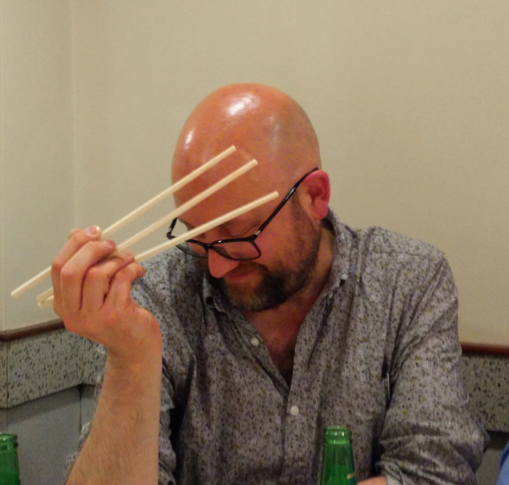

Simon Brunning
He/him. Guardian-reading, tofu-eating wokerati. Leftie. Father. Nerd. Pythonista. Agileista. Thoughtworker. Ex GDS. Secularist. Rationalist and empiricist. South Londoner. Comedy groupie. Good hugger. Music lover. CD buyer & ripper. Radio 4 listener.